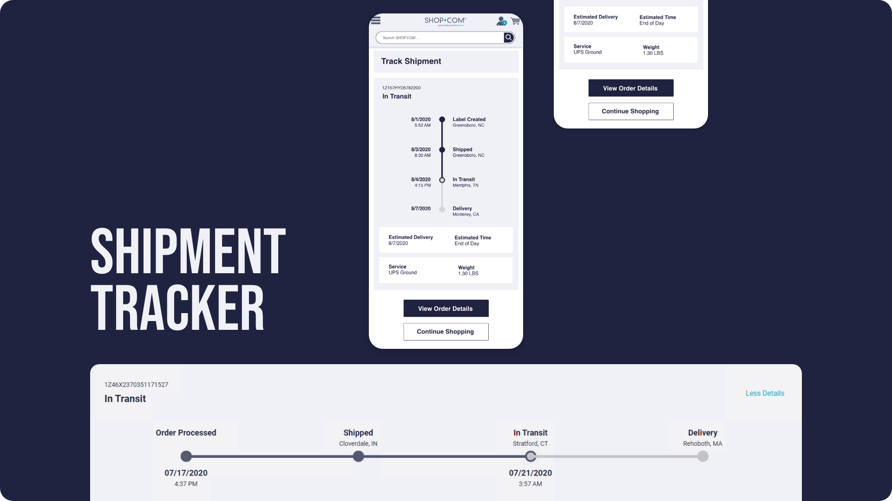
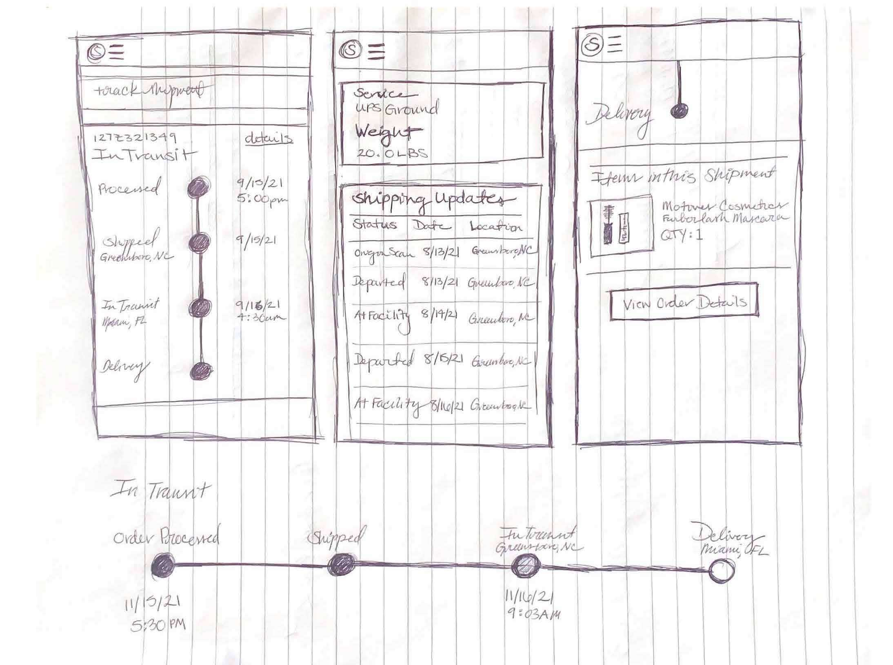
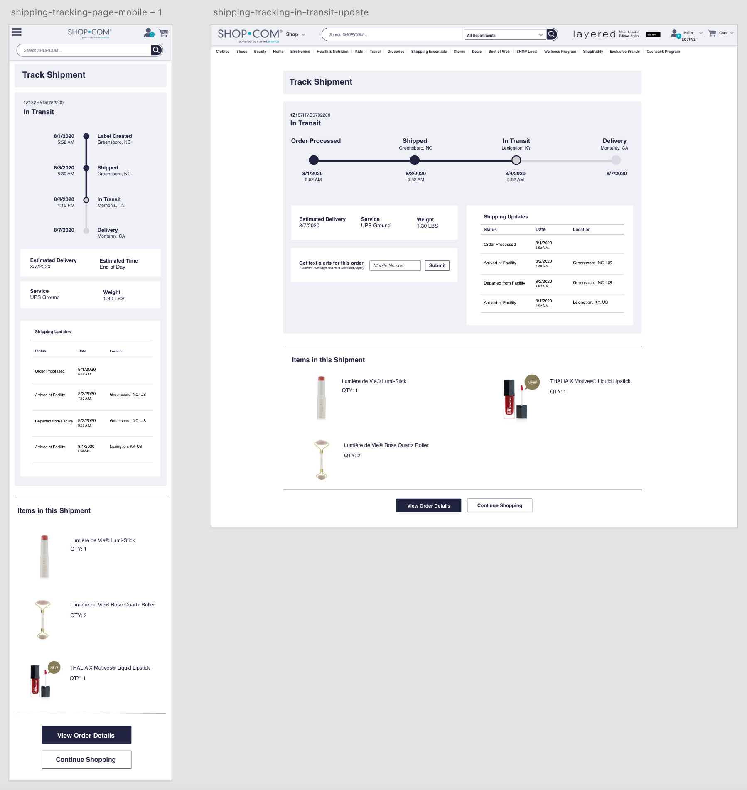
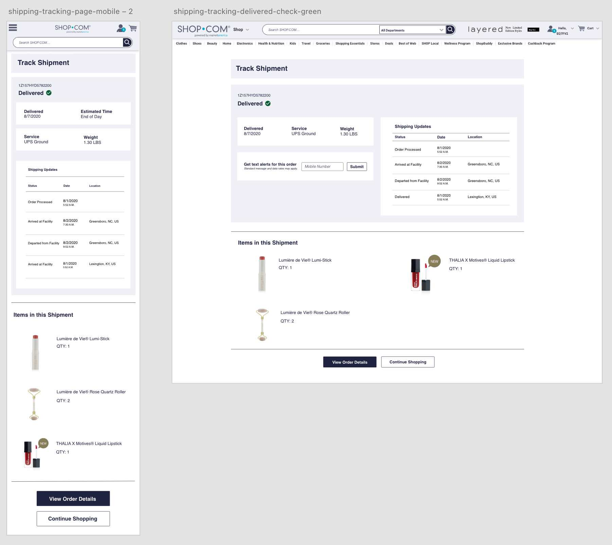
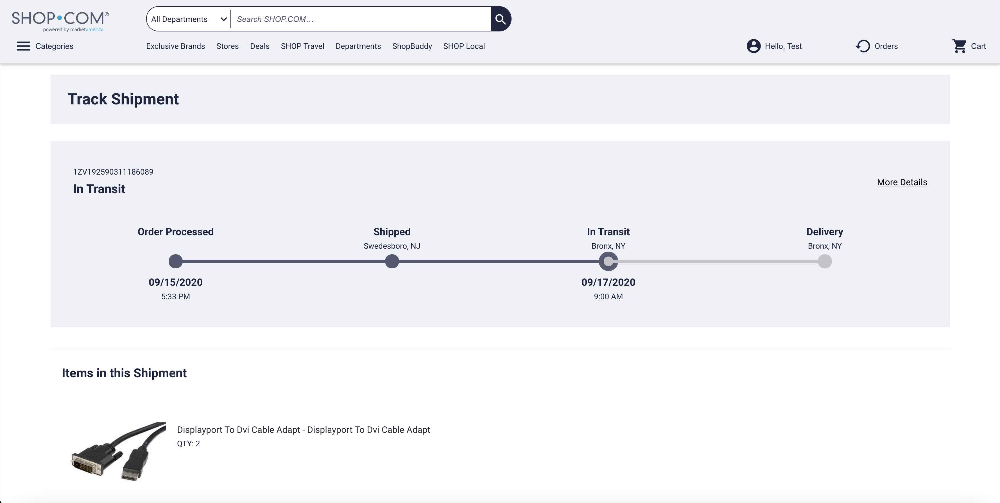

Shipment Tracking | Track your SHOP.COM package
Shipment Tracking using UPS API for Market America orders.
Problem
The problem for shipments on SHOP.COM, is that there was no way to track your package within the site. There was only a link off to UPS which would navigate a user away from the site.
My Role
My roles for this project consisted of UX designer and front end developer.
Goal
The goal was to provide an internal SHOP tracking page that would keep a user from leaving the site while still being able to access all of the same information that was on the UPS site.
Outcome
The outcome was an improvement on the page bounce rate by 50%.
Inital sketches for mobile version.
Then I created mockups for multiple use cases and states of tracking.


Then I created mockups for multiple use cases and states of tracking.
